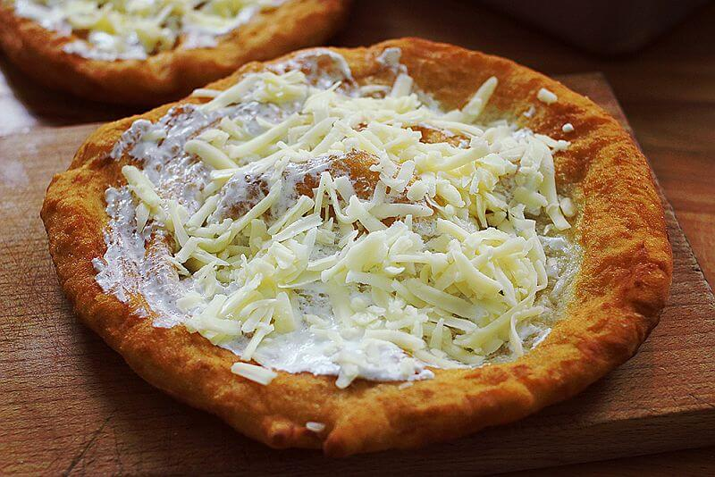
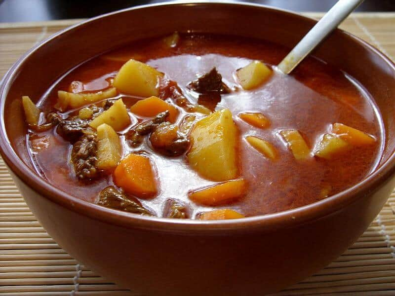

LÁNGOS

This deep fried savoury dough topped with grated cheese and sour cream is the ultimate Hungarian street food. You may want to walk the entire city after eating just one to balance the calories in and out, but it’s worth it. You can get lángos all over the city, like the Central Market Hall or at the Karavan Street Food Court (just next to Szimpla Kert ruin bar). One of the best places is Tomi Lángos (Blaha Lujza Tér 1), just next to Corvin Club and Müszi.
KÜRTÖSKALÁCS
Also known as chimney cake, this sweet brioche type bread glazed with sugar is cooked over coals or over an oven before being rolled in cinnamon, nuts or cocoa, among other toppings. It’s more of a seasonal treat, you’ll find it in all the Christmas markets, but you can still try it off season. Molnár’s Kürtöskalács on Váci street is perhaps the easiest place to find that’s evergreen, but keep your eyes open for pop up stands serving this classic pastry.
GULYÁS

Goulash is the ultimate Hungarian dish, but did you know that it’s not actually a stew but a soup? You’ll find a ton of take away soup places with variable menus that sometimes feature the classic meat and paprika soup, but if you’re specifically looking for goulash on the go, then head over to Finomótó Kantin in the II District on Vasárnyi utca.